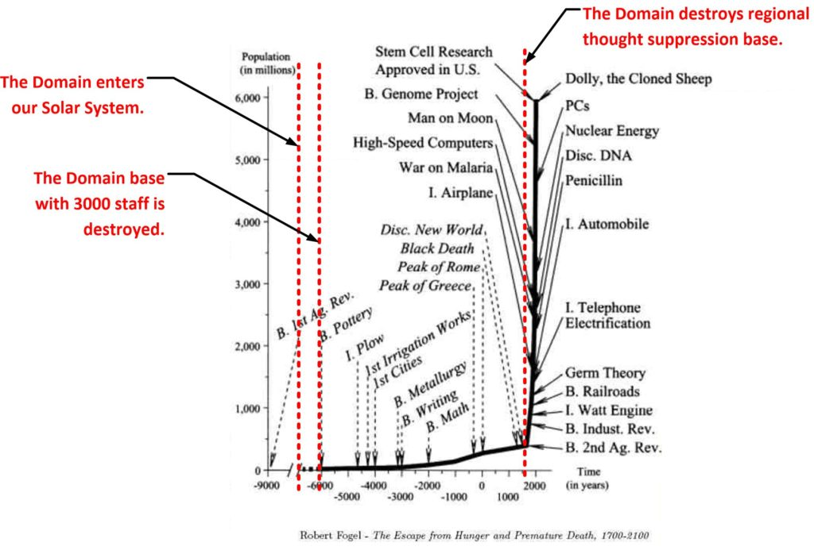
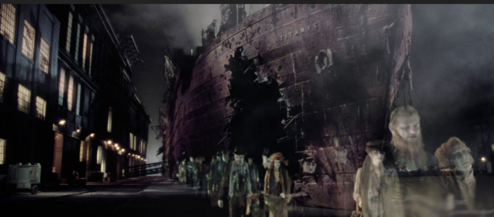

This article discusses why the Earth (and a number of other solar systems in our region of physical space) is known as a “prison planet” and why it is now morphing into what I refer to as a “Sentience Nursery”. It’s a rather detailed, and strange look (I guess) at the world we all share in light of the events of MAJestic and the “Alien Interview” disclosure.
Now, let it be well understood that throughout my entire time in MAJestic, I was told that the earth was a “sentience nursery” for the evolution and sorting of the consciousnesses here. But when I encountered the disclosure “Alien Interview”, which I am wholly and positively convinced that it is authentic, they referred to the earth (and nearby solar systems) as “Prison Planets”.
This did NOT change the fact that the earth and it’s environs are “Sentience nurseries”, instead, if provided a background that helped me (personally) flush out the events leading up to what is going on today.
Alien Interview – 1947
I have presented the PDF titled “Alien Interview” to the readership. It is the transcripts of the interview that a nurse had with an extraterrestrial entity that was recovered from a spaceship crash in Roswell, New Mexico in 1947. It was released in 2007. There is a lot of good stuff there, and now I am convinced that everything is in agreement with what was presented to me in MAJestic.
A quick reminder
In graphic form. A picture tells more than two encyclopedias.

Here’s the pertinent section…
The Domain enters the Milky Way galaxy
She told me that The Domain Expeditionary Force first entered into the Milky Way galaxy very recently — only about 10,000 years ago.
The Domain conquers the Old Empire
Their first action was to conquer the home planets of the “Old Empire” (this is not the official name, but a nick-name given to the conquered civilization by The Domain Forces) that served as the seat of central government for this galaxy, and other adjoining regions of space. These planets are located in the star systems in the tail of the Big Dipper constellation. She did not mention which stars, exactly.
The Domain installs bases inside the Milkyway Galaxy
About 1,500 years later The Domain began the installation bases for their own forces along the path of invasion which leads toward the center of this galaxy and beyond.
The Domain sets up a base on Earth
About 8,200 years ago The Domain forces set up a base on Earth in the Himalaya Mountains near the border of modern Pakistan and Afghanistan. This was a base for a battalion of The Domain Expeditionary Force, which included about 3,000 members.
They set up a base under or inside the top of a mountain. The mountain top was drilled into and made hollow to create an area large enough to house the ships and personnel of that force.
An electronic illusion of the mountain top was then created to hide the base by projecting a false image from inside the mountain against a “force screen”. The ships could then enter and exit through the force screen, yet remain unseen by homo sapiens.
The Old Empire attacks the Domain base on Earth
Shortly after they settled there the base was surprised by an attack from a remnant of the military forces of the “Old Empire”.
Unbeknownst to The Domain, a hidden, underground base on Mars, operated by the “Old Empire”, had existed for a very long time. The Domain base was wiped out by a military attack from the Mars base and the IS-BEs of The Domain Expeditionary Force were captured.
You can imagine that The Domain was very upset about losing such a large force of officers and crew, so they sent other crews to Earth to look for them. Those crews were also attacked.
The unusual handling of the capture Domain forces
The captured IS-BEs from The Domain Forces were handled in the same fashion as all other IS-BEs who have been sent to Earth. They were each given amnesia, had their memories replaced with false pictures and hypnotic commands and sent to Earth to inhabit biological bodies. They are still a part of the human population today.
After a very persistent and extensive investigation into the loss of their crews, The Domain discovered that “Old Empire” has been operating a very extensive, and very carefully hidden, base of operations in this part of the galaxy for millions of years.
No one knows exactly how long.
Final destruction of the Old Empire in this region
Eventually, the space craft of the “Old Empire” forces and The Domain engaged each other in open combat in the space of the solar system. According to Airl, there was a running battle between the “Old Empire” forces and The Domain until about 1235 AD, when The Domain forces finally destroyed the last of the space craft of the “Old Empire” force in this area. The Domain Expeditionary Force lost many of its own ships in this area during that time also.
A hidden Old Empire base in our area
About 1,000 years later the “Old Empire” base was discovered by accident in the spring of 1914 AD.
The discovery was made when the body of the Archduke of Austria was “taken over” by an officer of The Domain Expeditionary Force. This officer, who was stationed in the asteroid belt, was sent to Earth on a routine mission to gather reconnaissance.
A “electric fence” surrounds this area
Eventually The Domain discovered that a wide area of space is monitored by an “electronic force field” which controls all of the IS-BEs in this end of the galaxy, including Earth.
The electronic force screen is designed to detect IS-BEs and prevent them from leaving the area.
Snare, capture and make compliant
If any IS-BE attempts to penetrate the force screen, it “captures” them in a kind of “electronic net”.
The result is that the captured IS-BE is subjected to a very severe “brainwashing” treatment which erases the memory of the IS-BE.
This process uses a tremendous electrical shock, just like Earth psychiatrists use “electric shock therapy” to erase the memory and personality of a “patient” and to make them more “cooperative”.
On Earth this “therapy” uses only a few hundred volts of electricity. However, the electrical voltage used by the “Old Empire” operation against IS-BEs is on the order of magnitude of billions of volts! This tremendous shock completely wipes out all the memory of the IS-BE. The memory erasure is not just for one life or one body. It wipes out all of the accumulated experiences of a nearly infinite past, as well as the identity of the IS-BE!
The shock is intended to make it impossible for the IS-BE to remember who they are, where they came from, their knowledge or skills, their memory of the past, and ability to function as a spiritual entity.
They are overwhelmed into becoming a mindless, robotic non-entity.
Reprogramming and return back to prison
After the shock a series of post hypnotic suggestions are used to install false memories, and a false time orientation in each IS-BE.
This includes [1] the command to “return” to the base after the body dies, so that the same kind of shock and hypnosis can be done again, and again, again — forever.
The hypnotic command also tells [2] the “patient” to forget to remember.
The Old Empire was using Earth as a Prison Planet
What The Domain learned from the experience of this officer (in the body of the Archduke of Austria) is that the “Old Empire” has been using Earth as a “prison planet” for a very long time — exactly how long is unknown — perhaps millions of years.
So, when the body of the IS-BE dies they depart from the body.
They are detected by the “force screen”, they are captured and “ordered” by hypnotic command to “return to the light”.
The idea of “heaven” and the “afterlife” are part of the hypnotic suggestion — a part of the treachery that makes the whole mechanism work.
After the IS-BE has been shocked and hypnotized to erase the memory of the life just lived, the IS-BE is immediately “commanded”, hypnotically, to “report” back to Earth, as though they were on a secret mission, to inhabit a new body.
Each IS-BE is told that they have a special purpose for being on Earth. But, of course there is no purpose for being in a prison — at least not for the prisoner.
Who are the inmates in prison?
Any undesirable IS-BEs who are sentenced to Earth were classified as “untouchable” by the “Old Empire”.
The worst of the worst were sent to the Earth Prison Planet.
This included anyone that the “Old Empire” judged to be criminals who are too vicious to be reformed or subdued, as well as other criminals such as sexual perverts, or beings unwilling to do any productive work.
An “untouchable” classification of IS-BEs also includes a wide variety of “political prisoners”.
This includes IS-BEs who are considered to be non-compliant “free thinkers” or “revolutionaries” who make trouble for the governments of the various planets of the “Old Empire”.
Of course, anyone with a previous military record against the “Old Empire” is also shipped off to Earth.
A list of “untouchables” include artists, painters, singers, musicians, writers, actors, and performers of every kind. For this reason Earth has more artists per capita than any other planet in the “Old Empire”. “Untouchables” also include intellectuals, inventors and geniuses in almost every field.
Since everything the “Old Empire” considers valuable has long since been invented or created over the last few trillion years, they have no further use for such beings. This includes skilled managers also, which are not needed in a society of obedient, robotic citizens. Anyone who is not willing or able to submit to mindless economic, political and religious servitude as a tax-paying worker in the class system of the “Old Empire” are “untouchable” and sentenced to receive memory wipe-out and permanent imprisonment on Earth. The net result is that an IS-BE is unable to escape because they can’t remember who they are, where they came from, where they are.
They have been hypnotized to think they are someone, something, sometime, and somewhere other than where they really are.
The Domain Officer unravels this entire scheme
The Domain officer who was “assassinated” while in the body of Archduke of Austria was, likewise, captured by the “Old Empire” force.
Because this particular officer was a high powered IS-BE, compared to most, he was taken away to a secret “Old Empire” base under the surface of the planet Mars. They put him into a special electronic prison cell and held him there.
Fortunately, this Domain officer was able to escape from the underground base after 27 years in captivity.
When he escaped from the “Old Empire” base, he returned immediately to his own base in the asteroid belt. His commanding officer ordered that a battle cruiser be dispatched to the coordinates of the base provided by this officer and to destroy that base completely. This “Old Empire” base was located a few hundred miles north of the equator on Mars in the Cydonia region.
The “fence” and snare and return continued to function in 1947
Although the military base of the “Old Empire” was destroyed, unfortunately, much of the vast machinery of [1] the IS-BE force screens, [2] the electroshock / amnesia / hypnosis machinery continues to function in other undiscovered locations right up to the present moment.
The main base or control center for this “mind control prison” operation has never been found.
So, the influences of this base, or bases, are still in effect.
Earth has become a “dumping ground” of misfits
The Domain has observed that since the “Old Empire” space forces were destroyed there is no one left to actively prevent other planetary systems from bringing their own “untouchable” IS-BEs to Earth from all over this galaxy, and from other galaxies nearby.
Therefore, Earth has become a universal dumping ground for this entire region of space.
This, in part, explains the very unusual mix of races, cultures, languages, moral codes, religious and political influences among the IS-BE population on Earth.
The number and variety of heterogeneous societies on Earth are extremely unusual on a normal planet. Most “Sun Type 12, Class 7” planets are inhabited by
only one humanoid body type or race, if any.
In addition, most of the ancient civilizations of Earth, and many of the events of Earth have been heavily influenced by the hidden, hypnotic operation of the “Old Empire” base.
So far, no one has figured out exactly where and how this operation is run, or by whom because it is so heavily protected by screens and traps.
Furthermore, there has been no operation undertaken to seek out, discover and destroy the vast and ancient network of electronics machinery that create the IS–BE force screens at this end of the galaxy. Until this has been done, we are not able to prevent or interrupt the electric shock operation, hypnosis and remote thought control of the “Old Empire” prison planet. Of course all of the crew members of The Domain Expeditionary Force now remain aware of this phenomena at all times while operating in this solar system space so as to prevent detection and the capture by “Old Empire” traps.”
MAJestic – 1947
The “Majestic–12″ committee, was organized by President Harry Truman shortly after the Roswell incident in 1947. And this created the SAP known as the MAJestic organization.
MM and the MAJestic Narrative
I joined MAJestic as a Naval Aviator / (Astrophysicist & Aerospace Engineer) in May 1981. After thirty years of active participation in the organization, I was retired in May 2006. My “active retirement” lasted five years and ended in 2011. I am now a discarded MAJestic operator.
EBP insertion and non-physical training began in 1981. My training, and calibration of the ELF probes happened a number of years after that. All exposure that I have to knowledge, understanding and skills comes from the entanglement of our benefactors.
My primary and functional duty was “anchoring” of consciousnesses in this region to prevent catastrophic events from occurring. (Whatever those catastrophic events were, I haven’t a clue.) This meant world-line travel and consciousness manipulation were my primary tools.
I was involved in…
- Manipulation of consciousness
- World-line travel
- Anchoring of clustered world-line behaviors.
As strange as this might appear and sound, if you look at what the events and operational projects entailed, you can clearly see that they were involved in the control and manipulation of world-line alterations as a function of consciousness mass-manipulation.
Not protecting the earth from those pesky Reptilians as part of the great marine space fleet. LOL! I had to throw this bunch of popular fiction in, don't you know!
If you consider that each consciousness was “retarded” in access to their memories, then…
… my actions were all in alignment with rehabilitative services within a restorative clinic or hospital environment.
So, obviously Earth is a “sentience nursery”. Just as what has been described to me all these years within MAJestic.
So, please most kindly take notes. Today the earth is not considered to be a “Prison Planet”. It is considered and treated as a rehabilitation complex. And all those “abductions” and “probing” and “procedures” are good things designed to alter your prison (non-physical) bodies into a (operation gown) bodies for rehabilitation purposes.
But what happened? What changed?
Think people.
If you manage to destroy a sizable number of the systems and facilities (the walls and the guard towers) of a prison, what are you going to do with all the inmates? Are you going to release them “Ghostbusters” style all at once (like what happened in the Ghostbusters movie)?

No.
There are all kinds of people in the Earth Prison Planet Environment.
Some are really innocent. Some just got caught up and imprisoned here. Others were political prisoners who were sent here. Some are terribly creative individuals who were sent here, and some are truly evil, and selfish creatures.
So how you do sort them all out?
And you do need to sort them all out. If you don’t you would end up polluting the entire galaxy with hordes of very evil and dangerous entities.
You sort them.
You sort them by sentience.
The criteria
So if you are going to sort consciousness by sentience, you need to filter out what you keep, what you allow to leave, and what you keep an eye on as they are almost ready to leave, just not totally there yet.
As far as I understand, the sentience of human beings fall into the following categories…
- Service to self (being selfish and greedy).
- Service to another (a follower, a believer, a NPC).
- Service to others (a member of a group of people putting them first).
- Disjointed, confused, or emotionally, mentally sick.
Service to Self sentience sub-types
As best as I can tell, the subcategories of a Service to Self person are…
- Psychopath
- Sociopath
- Selfish
- Greedy
- Narcissistic
They get to stay in the “Sentience Nursery” / “Prison Planet” environment simply because they are too dangerous to unleash on the rest of the universe.
Service to Another sentience sub-types
These consciousnesses are not ready to leave yet, but they are on the way and almost ready to go. I would guess that their progression in sentience would depend on many things, most importantly is their position in any of the subcategories of this type of sentience.
And the subcategories of a Service to other person are…
1. Sycophants
These are very close (if not the same as) a Service to Self sentience.
Also known as a toady, a sycophant follower knows nothing but an advantage. All that is in his mind is nothing but a strategic plan to keep on holding on or following till he gets what he really wants or keep on maintaining the advantage he wants. More often than not the sycophant follower seems to be self-seeking and behaves like a parasite: gives nothing, yet takes.
2. Critics
Critics are also close to being Service to Self sentience entities.
They are annoying, they are also motivating. The critic followers will always post, comment or say unfavorable opinions concerning a person or an organization or a political party at all times. For others it may be a very annoying process yet for some it is a learning point and adjusting method for future reference.
3. Realists
These are sentience’s that are caught up in the material world. They are not necessarily bad, but they still have much to learn. They need a few more cycles of “reincarnation” to straighten out their sentience.
Here are the philosophers. The realist followers are so aware of reality and they have to let you accept it. The realist followers are always on the side of the truth, the naked truth. They will always accept the physical and most evident of circumstances and issues and they will always let the world know, and to the person or thing or group, they might be following.
4. Loyalists
These are close to Service to Others sentience, but not all the way there. They, for the most part, are but one reincarnation away from a Service to Others sentience.
They are the best kind of followers, the loyalist followers. They are as loyal as dogs can be. You will likely never be disappointed by a loyal follower for they are as true and as honest. No mischief in them or cunning activities. They are loyal almost to a fault.
5. Traitors
These are Service to self individualists in disguise.
Traitors are another bunch of followers that are the complete opposite of the loyal followers. These are the Judases that will betray Jesus from time to time. Traitor followers will stick by you; follow up with you as long as the weather seems as conducive to continue being with you, not forever but till that time when the first drop of rain falls and the going gets tough, then they will betray you.
6. Spectators
These are Service to self individualists in disguise.
The spectator followers are always on the sideline and surely enough are careful enough not to cross it and only do so when the excitement gets too much. The spectator followers are never in the game but will make sure that you get your support. They will give you all deserving praises and belief then let you walk into the battlefield all alone.
7. Opportunists
These are Service to self individualists in disguise.
They have not much of a difference from the sycophant followers or traitor followers. The opportunist follower will have no other reason for starting following other than for an advantage at some point. He or she does not have upmost loyalty. They are like a soaring eagle in the sky keenly eyeing and falling indistinctively with an end goal to capture an unaware fish or mouse.
8. Sheep
These sentience’s are on the path, but they need a few more cycles of reincarnation to sort out the sentience better.
The common myths and facts suggest that sheep are the dumbest of all animals following without question or doubt, keenly observant to only beck at its master’s call and commands. And so is the sheep follower. They follow with no question, they seem so loyal, and they might be. More often than not, the sheep followers would rather follow other than making an informed and independent decision. Many associate those that blindly follow government rules or elected officials without any questions as sheep.
9. “Yes” People
They need a few more reincarnations to straighten out their sentience direction. They are actually “sitting on the fence” in the over all scheme of sentience selection.
The ‘yes’ followers simply want to avoid confrontation and pleasing people is their number one priority. The ‘yes’ people follower will always find themselves in uncalled for situations since they do not take their time to think through the yes responses that they give. They are a often resentful types of people which makes them end up having following what they do not even believe in.
10. Alienated
They are almost at a Service to Self sentience.
The alienated type of follower will always strive to make you feel indifferent and rather hostile. They really know how to pick their words and actions to fit well with their aim and purpose.
11. Survivor
These kind of sentience’s are closer to the Service to Other’s sentience, but need some time to sort things out a little better.
Survivor followers are the most prevailing as they stick by you through hard moments and also stick by you through the good times. The survivor followers have a strong belief in you.
12. Effective
They are almost at a Service to Self sentience. Almost “one foot in the door”.
Here are the kinds of followers that just really know which decisions to make in the order for you reach your intended goal. The effective followers not only follow you but also have a really good impact on your success.
13. The Isolate(d)
A person who is strongly leaning to a Service to Self sentience.
The isolate(d) follower needs no cushioning. He or she acts on their own and most seemingly enjoys the following solo. He does not like crowds. The isolate follower is a lone wolf.
14. The Bystander
This person is solidly in the Service to another realm, and needs a few cycles to sort things out.
The bystander follower seems like the spectator follower. He too does not necessarily take part in the course of action. In his following, he becomes the keen observant from a distance.
15. The Participant
This person is almost a Service to others sentience, and might end up being one entirely within this lifetime.
Here is the jack of all spades. The participant follower is active and vibrant. He is very present and would even go the extra mile for you. He is also the type to bring fun along.
16. The Activist
Almost a full Service to Others sentience in this life.
The activist follower is not just the average follower. He is the one that always follows and cares to bring about change and in most cases, the popular good is his aim.
17. The Diehard
Almost a full Service to Others sentience in this life.
The diehard follower is very instinctive. Like a viper, he is ready to strike and will go down even to the bottomless pit for you. If there is one who can die for you then it is the diehard follower. Fans of the Lord of the Rings franchise would quickly identify Sam Gamgee as the diehard follower of Frodo.
Who gets to leave and who needs to stay?
As I understand it, the ability to leave the “Sentience Nursery” is a function of what your consciousness is.
A service to others sentience gets to leave. At least that is how I understand it today. Obviously when the Old Empire controlled this area, no one ever got to leave it. But things are quite different now.
A service to self sentience gets to stay. They get to relive their time in the earth habitat over and over, and over, and over until they start to feel compassion towards others and their sentience changes.
A service to another sentience stays but is monitored. They are not yet fully developed enough to leave, but not really ready to be released. You can consider this sentience to be on various states of parole.
Disjointed, confused, or non-settled sentience’s stays. Until they straighten out one way or the other, they must stay in this realm under supervision.
Summary and conclusion
The earth realm, both physical and non-physical, is a Sentience Nursery. it was initially set up as a Prison, but that has changed since the Domain started working with MAJestic. The ability to leave this environment depends on your true nature, and this is determined by your sentience.
If you watch Rufus videos and in your heart, you think that they are suckers, idiots, or fools; then you are probably a Service to Self sentience.
If you watch Rufus videos and in your heart, you feel emotion, joy and wish to be a helpful person, then you are a Service to Others sentience.
If you watch a few Rufus videos but are quickly bored and find no interest in them, then you are a Service to Another sentience.
If you watch Rufus videos and wonder about them, are curious about them, but cannot relate to the Rufus in the video, nor the people needing help, you are a disjointed sentience.
Are you ready to take the test?
Watch the video below. Measure your feelings and thoughts after viewing it, and use it to see what sentience that you are “leaning towards”. Sentience is not something that you can hide. It is a resonance point that is affiliated with your consciousness.
There are no right or wrong answers. It’s a method to determine where you are at in regards to sentience and whether or now you need to reincarnate over and over again on the earth, or if you are worthy to be “altered” to permit “escape velocity” from this region.
Grading
If you think that She is brave and the embodiment of what a person should be, then you are a Service to Others Sentience.
If you think that she is stupid for not trying to steal the guys wallet, then you are most certainly a Service to Self Sentience.
If you think that she should have stood by and called the police, as she is too old, and the accident is too serious, then you are a Service to Another Sentience.
If you don’t think anything other than this is a “stupid” and silly movie, and a waste of your time, then you are a Disjointed Sentience.